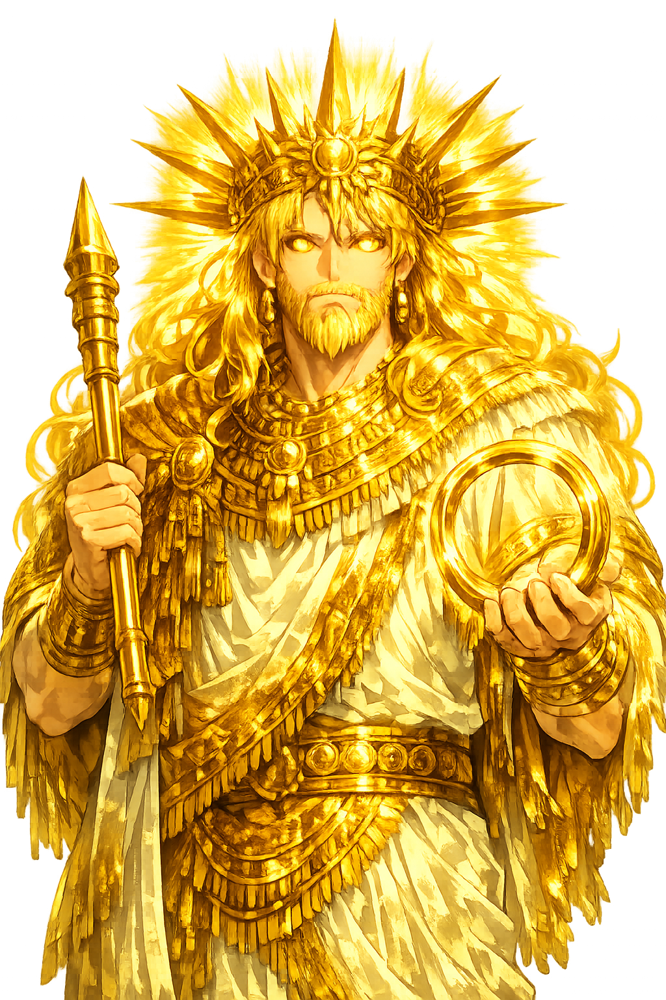

Unicode restoration and ASCII comparison
𒀭𒌓
The name in its original Mesopotamian form. Šamaš (𒀭𒌓) is attested in the source tradition — “Sun (Akkadian Šamaš)”. Its original diacritics and script distinctions carry the full phonetic and orthographic weight of the source tradition.
shamash
Reduced to plain shamash, the name loses everything that made it specific: original diacritics and script distinctions. What remains is an ASCII string that machines can parse but that no longer speaks with its original voice.
Šamaš
The Unicode restoration recovers what ASCII flattened. Šamaš restores original diacritics and script distinctions, returning the name to its original written dignity. The domain encodes to Punycode, but the browser displays the truth.
Šamaš.com → xn--ama-zzad.com
The non-ASCII characters in Šamaš are encoded while the ASCII remains visible. To the DNS, it is Punycode. To humanity, it is Šamaš.
How Šamaš travels from ancient script to the modern URL
Akkadian Šamaš continues Sumerian Utu, the sun-god; the name is related to the West Semitic word for sun (*šamš-).
Sun, Justice, Law
The Unicode restoration Šamaš preserves vowel length; the cuneiform form is not registrable in .com.
How Šamaš was spoken
Sun, Justice, Law
Šamaš is the sun that sees everything and therefore the god who cannot be bribed. In Mesopotamia he is both the physical light that rises over the eastern mountains and the moral light that exposes false weights, perjured testimony, and hidden crime. Kings receive their laws from him; judges take their oaths before him; travelers pray to him on the open road. No other solar deity in the ancient Near East is so explicitly a god of forensic justice.
Each dawn his rays sweep across the world like a judge's eye; nothing concealed escapes Šamaš.
Hammurabi received his law code from Šamaš; the stele shows the king standing before the seated sun-god.
Merchants, messengers, and the wrongly accused invoke him at roadsides; he protects the honest wayfarer.
The liver, the entrails, and the movements of the heavens are read under his patronage, for he reveals what is hidden.
Stories of Šamaš
Šamaš's myths are hymns, legal preludes, and royal testimonies rather than long narratives. His power is assumed, praised, and appealed to; his daily rising is the central miracle that needs no elaborate story to be authoritative.
The most famous literary monument to Šamaš describes him rising from the eastern mountains, scattering the demons of night, and looking down upon every land. 'You climb the mountains to observe the world; the lower world lies before you like the palm of a hand.' The hymn insists that the god sees the wicked and the just impartially: the perjurer, the false merchant, the corrupt judge cannot hide. At the same time, the hymn praises Šamaš as the helper of the poor, the orphan, and the widow — the only court of appeal for those with no human patron.
The stele of Hammurabi's law code opens with a scene in which the Babylonian king stands before Šamaš, who extends the rod and ring of kingship. The image is not decorative: it asserts that Babylonian law flows from the sun-god's justice. The epilogue calls down curses on any future king who alters or disregards the laws — curses enforced by Šamaš himself.
In the Epic of Etana, the childless king of Kish prays to Šamaš for the plant of birth. The god sends him an eagle, and Etana rides the eagle up to the heaven of Anu. The story links Šamaš not only to justice but to the life-giving power of the sun and the risky ascent toward the divine.
When the wild man Enkidu is created to humble Gilgameš, it is Šamaš who takes pity on him and sends dreams. After the heroes kill the Bull of Heaven and Ḫumbaba, Šamaš and Enlil debate their fates; the sun-god's interventions show his role as advocate for mortals before the sterner sky-gods.
Šamaš asks a question that every civilization must answer: what gives a law authority? Not force alone, since force is partial; not tradition alone, since tradition can be corrupt. The Mesopotamian answer is the sun itself — the one witness no bribe can reach, the one light that falls equally on palace and hovel. To invoke Šamaš is to appeal from human partiality to cosmic impartiality.
Enter Extended Lore